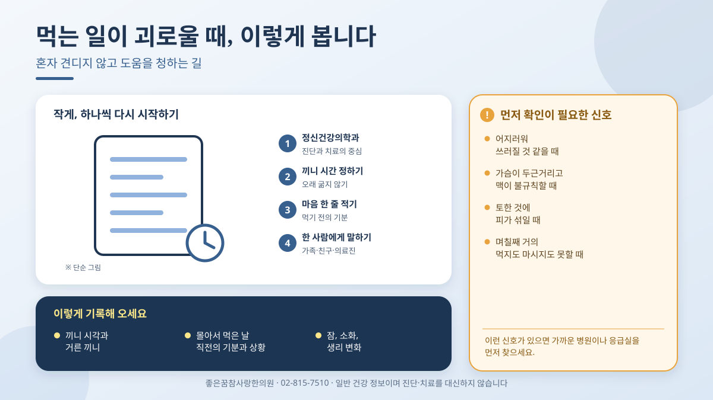

이종호 한의사 감수좋은꿈참사랑한의원 대표원장 (한의사 면허번호 19769)발행 2026-11-26 · 수정 2026-11-26
이 글의 차례
밤늦게 부엌 불만 켜 두고 냉장고 앞에 서 있습니다. 배가 고파서라기보다 오늘 하루가 너무 버거워서 손이 갑니다. 정신없이 먹고 나면 곧바로 후회가 밀려오고, 화장실로 향하거나 내일은 아무것도 먹지 않겠다고 다짐합니다. 그 다짐은 며칠 뒤 또 무너집니다.
진료실에서 이런 이야기는 대개 아주 조심스럽게, 다른 불편 뒤에 숨어서 나옵니다. 소화가 안 된다, 생리가 불규칙하다, 늘 기운이 없다는 말씀을 한참 나눈 뒤에야 "사실은 먹는 게 좀 이상해요"라는 말이 나옵니다. 저는 그 한마디를 꺼내 주신 것만으로도 큰 걸음이라고 생각합니다.
먹는 일은 하루 세 번 피할 수 없이 찾아옵니다. 그래서 먹는 일이 괴로워지면 하루 전체가 흔들립니다. 무엇을 먹을지, 얼마나 먹었는지, 누가 보았는지가 머릿속을 꽉 채우고, 정작 다른 일에는 마음을 쓰기 어려워집니다.
이 글은 진단을 내리기 위한 글이 아닙니다. 내가 겪는 일이 혹시 도움을 청해야 하는 상태인지, 그렇다면 어디서부터 시작하면 좋은지, 한의원은 그 길에서 어떤 자리에 설 수 있는지를 함께 정리해 보려는 글입니다.
식이 문제는 어떤 모습으로 나타나나요?
식이 문제는 한 가지 얼굴만 있지 않습니다. 어떤 분은 먹는 양을 극단적으로 줄이고, 어떤 분은 몰아서 많이 먹은 뒤 토하거나 설사약을 찾고, 어떤 분은 토하지는 않지만 폭식과 자책을 되풀이합니다. 이 세 가지가 시기에 따라 번갈아 나타나기도 합니다.
흔히 말하는 거식증은 체중이 늘까 두려워 먹는 양을 지나치게 줄이는 모습입니다. 이미 마른 편인데도 스스로는 살이 쪘다고 느끼는 경우가 많습니다. 폭식증은 짧은 시간에 많이 먹고, 그 뒤 토하기나 굶기, 과한 운동으로 되돌리려는 행동이 반복되는 모습입니다.
폭식장애는 몰아서 먹는 일이 반복되지만 토하거나 굶는 되돌림은 뚜렷하지 않은 경우를 말합니다. 대신 먹고 나서 깊은 수치심과 자책이 따라옵니다. 이름이 무엇이든, 먹는 일 때문에 마음이 오래 괴롭고 생활이 좁아졌다면 도움을 청할 이유로 충분합니다.
다이어트와 식이 문제는 어떻게 다른가요?
체중을 줄이려고 식사를 조절하는 일 자체는 흔합니다. 차이는 그 조절이 나를 위해 움직이는지, 아니면 내가 그 조절에 끌려다니는지에 있습니다. 먹은 것을 계속 머릿속으로 계산하고, 계획대로 못 먹은 날 하루 전체를 망쳤다고 느낀다면 한 번 멈춰 볼 때입니다.
몇 가지 질문을 스스로에게 해 보셔도 좋습니다. 먹은 뒤 일부러 토한 적이 있는지, 체중 숫자에 따라 그날 기분이 크게 바뀌는지, 남과 함께 먹는 자리를 피하게 되는지, 먹는 일을 숨기게 되는지요. 이런 일이 몇 주 넘게 이어진다면 혼자 판단하기보다 전문가와 이야기해 보시길 권합니다.
감정적 폭식과도 겹치는 부분이 있습니다. 속상한 날 단 음식이 당기는 일은 누구에게나 있습니다. 다만 그 뒤 토하거나 굶는 행동이 따라붙고, 그 고리가 주마다 되풀이된다면 단순한 습관을 넘어선 신호일 수 있습니다.
왜 먹는 일이 이렇게 괴로워질까요
식이 문제는 의지가 약해서 생기는 일이 아닙니다. 대부분 여러 갈래가 함께 얽혀 있습니다. 완벽해야 한다는 마음, 내 몸에 대한 강한 불만, 오래 쌓인 스트레스나 상처, 다이어트를 반복하며 생긴 굶주림과 폭식의 고리가 서로를 키웁니다.
몸의 쪽에서 보면, 오래 굶은 몸은 다음 식사 때 강한 식욕으로 균형을 맞추려 합니다. 그래서 굶는 날이 길수록 몰아서 먹는 날도 강해지기 쉽습니다. 먹고 토하면 몸은 들어온 것이 없다고 느껴 또 허기를 보내고, 그 허기가 다시 폭식을 부르는 고리가 생깁니다.
마음의 쪽에서 보면, 먹는 일이 불안이나 외로움, 화를 잠시 잊게 해 주는 통로가 되기도 합니다. 토하거나 굶는 일은 통제하고 있다는 느낌을 잠깐 줍니다. 그래서 겉으로는 음식 문제처럼 보여도, 속에는 감정을 다룰 길이 막혀 있는 경우가 많습니다.
그래서 저는 "왜 그렇게 먹었느냐"라고 묻지 않습니다. 대신 먹기 직전에 어떤 마음이었는지, 그날 무엇이 버거웠는지를 여쭙습니다. 음식보다 그 앞의 마음을 함께 보는 것이 출발점입니다.
몸에서 먼저 나타나는 불편
식이 문제가 이어지면 몸은 여러 방식으로 신호를 보냅니다. 진료실에서 자주 듣는 것은 이런 불편입니다. 스스로는 식사와 연결 짓지 못하고 따로따로 겪고 계신 경우가 많습니다.
- 생리가 불규칙해지거나 몇 달째 없는 경우
- 손발이 늘 차고 추위를 유난히 타는 경우
- 속이 더부룩하고 변비나 설사가 번갈아 오는 경우
- 목이 자주 쓰리거나 침샘 쪽이 붓는 느낌이 드는 경우
- 머리카락이 많이 빠지고 피부가 건조해진 경우
- 앉았다 일어설 때 어지럽고 쉽게 지치는 경우
- 잠이 얕고 새벽에 자주 깨는 경우
토하는 일이 잦으면 위산 때문에 목과 치아가 상하기 쉽고, 몸속 염분 균형이 흔들릴 수 있습니다. 이런 변화는 겉으로 잘 드러나지 않아서, 정신건강의학과나 내과에서 혈액 검사로 확인하는 것이 중요합니다.
어디에 먼저 도움을 청하면 좋을까요?
진단과 치료의 중심은 정신건강의학과입니다. 처음 문을 두드리기가 가장 어렵습니다. 병원에 가면 무엇을 말해야 할지 막막하시다면 "먹고 나서 토하는 일이 반복돼요"처럼 한 문장만 준비해 가셔도 충분합니다. 나머지는 의사 선생님이 차근차근 여쭤봅니다.
체중이 많이 줄었거나 토하는 일이 잦다면 내과에서 혈액 검사와 몸 상태를 함께 보는 것도 필요합니다. 치과에서 치아 상태를 살피는 것도 도움이 됩니다. 한 곳에서 모든 것을 해결하려 하기보다, 여러 사람이 각자의 자리에서 돕는다고 생각해 주세요.
가족이 걱정되어 먼저 찾아오시는 경우도 있습니다. 가족이 할 수 있는 가장 좋은 일은 몸무게나 먹은 양을 따지기보다 "요즘 많이 힘들어 보여서 걱정돼"라고 마음을 먼저 전하는 것입니다. 병원은 함께 가 주겠다고 말해 주시면 첫걸음이 훨씬 가벼워집니다.
병원 치료는 대개 어떻게 이어지나요
정신건강의학과에서는 먼저 지금 몸이 얼마나 지쳐 있는지, 마음은 어떤 상태인지를 함께 살핍니다. 그 뒤 상담 치료를 중심으로, 필요하면 약을 함께 쓰는 방식으로 진행되는 경우가 많습니다. 영양 상담이나 내과 진료가 함께 연결되기도 합니다.
상담에서는 먹는 행동만이 아니라 그 행동을 부르는 생각과 감정을 함께 다룹니다. 처음에는 규칙적으로 먹는 연습부터 시작하는 경우가 흔합니다. 굶지 않는 것이 폭식을 줄이는 출발점이라는 것을 몸으로 익혀 가는 과정입니다.
치료 기간은 사람마다 다르고, 몇 달에서 그 이상 이어지기도 합니다. 중간에 다시 흔들리는 일은 흔하니, 그럴 때 치료를 그만두기보다 담당 선생님께 지금 상황을 그대로 말씀해 주시는 것이 좋습니다.
먼저 이렇게 여쭙니다
처음 오시면 저는 대략 이런 순서로 여쭙니다. 답하기 어려운 질문은 건너뛰셔도 괜찮습니다. 편하게 말씀하실 수 있는 만큼만 나누시면 됩니다.
- 정신건강의학과 진료를 받고 계신가요? 드시는 약이 있나요?
- 하루 식사는 대략 어떤 흐름인가요? 거르는 끼니가 있나요?
- 몰아서 먹거나 먹은 뒤 토하는 일이 일주일에 몇 번쯤 있나요?
- 생리 주기는 어떤가요? 마지막 생리는 언제였나요?
- 잠은 몇 시간쯤, 얼마나 깊게 주무시나요?
- 소화, 대변, 손발 온도는 어떤가요?
이 질문들은 평가하려는 것이 아니라, 지금 몸이 어떤 상태에서 버티고 있는지를 알기 위한 것입니다. 숫자로 정확히 답하지 못하셔도 괜찮습니다.
일상에서 먼저 해 볼 수 있는 것
식이 문제는 혼자 마음먹는 것만으로 풀리기 어렵습니다. 다만 치료를 시작하기 전이나 치료와 함께, 일상에서 작게 해 볼 수 있는 것들이 있습니다. 거창한 계획보다 하나만 골라 보세요.
- 끼니를 오래 거르지 않기, 세 끼 시간을 대략 정해 두기
- 먹은 양보다 먹기 전의 마음을 한 줄로 적어 보기
- 체중계를 잠시 눈에 띄지 않는 곳에 두기
- 폭식이 잦은 시간대에 할 일을 미리 정해 두기
- 먹고 난 뒤 자책하는 말을 스스로에게 하지 않기
- 믿을 만한 사람 한 명에게 지금 상황을 털어놓기
끼니를 정해 두는 일이 왜 중요하냐면, 오래 굶은 뒤에 오는 허기가 폭식의 가장 큰 방아쇠가 되기 때문입니다. 처음에는 양보다 시간을 지키는 데 마음을 두셔도 충분합니다.
폭식 충동이 오는 시간대가 정해져 있는 분이 많습니다. 퇴근 직후, 밤늦게 혼자 있을 때처럼요. 그 시간에는 따뜻한 물로 샤워하기, 집 앞 짧은 산책, 친구에게 메시지 보내기처럼 몸을 다른 곳으로 옮기는 일을 미리 정해 두면 고리를 한 번 끊는 데 도움이 될 수 있습니다.
넘어진 날이 있어도 괜찮습니다. 하루 무너졌다고 그 주 전체가 실패한 것이 아닙니다. 다음 끼니를 평소처럼 드시는 것, 그것이 다시 일어서는 가장 작은 걸음입니다.
한의원에서 함께 살필 수 있는 경우
- 정신건강의학과 치료를 받으면서 소화불량이나 변비가 이어지는 경우
- 식사가 불규칙해진 뒤 손발이 차고 기운이 없는 경우
- 생리가 불규칙해져 산부인과 진료와 함께 몸을 살피고 싶은 경우
- 긴장과 불안으로 잠이 얕고 어깨와 목이 늘 굳어 있는 경우
- 다시 규칙적으로 먹기 시작하며 속이 불편하고 더부룩한 경우
좋은꿈참사랑한의원에 오시면 먼저 아래 '먼저 확인이 필요한' 신호가 없는지 살피고, 정신건강의학과 치료를 받고 계신지 여쭙습니다. 아직 받지 않으셨다면 병원 진료를 먼저 권해 드립니다. 그다음 맥을 짚고 소화, 잠, 생리, 손발 온도를 함께 봅니다.
진찰한 내용을 바탕으로 침이나 물리치료 같은 관리, 생활에서 바꿔 볼 것 하나를 정합니다. 한약을 상의할 때는 드시는 약을 모두 확인한 뒤 신중히 정하고, 필요하면 담당 선생님과 상의하시도록 안내합니다. 처방받은 약은 상의 없이 멈추지 않습니다.
한의원은 치료의 중심이 아니라 곁에 선 자리입니다. 병원에서 마음을 돌보는 동안, 한의원에서는 굳은 몸과 지친 속, 흐트러진 잠을 함께 살피며 다시 먹는 일이 조금 덜 괴로워지도록 돕고 싶습니다.
이렇게 기록해 오시면 상담이 쉬워집니다
기록은 잘하고 못하고를 평가하려는 것이 아닙니다. 어떤 날 어떤 마음일 때 고리가 시작되는지 찾기 위한 지도입니다. 2주 정도 간단히 적어 보세요.
- 끼니 시각과 거른 끼니
- 몰아서 먹은 날, 그 직전의 기분과 상황
- 토하거나 굶은 날 표시
- 잠든 시각과 깬 시각
- 소화, 대변, 생리 변화
- 그날 버거웠던 일 한 줄
먹은 음식의 칼로리나 양은 적지 않으셔도 됩니다. 오히려 숫자를 적는 일이 부담을 키울 수 있습니다. 마음과 시간을 적는 것이 이 기록의 핵심입니다.
이 기록은 정신건강의학과 진료에 가져가셔도 좋습니다. 같은 기록을 여러 선생님이 함께 보면, 각자 맡은 자리에서 무엇을 살필지 더 분명해집니다. 적기 힘든 날은 건너뛰셔도 괜찮습니다.
다시 먹는 일이 편안해지기까지
식이 문제에서 회복하는 길은 곧게 뻗은 길이 아닙니다. 좋아지는 듯하다가 다시 흔들리는 날이 있고, 그런 날이 여러 번 찾아옵니다. 그 흔들림이 회복이 실패했다는 뜻은 아닙니다.
오늘 이 글을 끝까지 읽으셨다면 이미 내 상태를 들여다보기 시작하신 겁니다. 다음 걸음은 한 사람에게 말하는 것입니다. 가족이어도, 친구여도, 정신건강의학과 선생님이어도, 저여도 괜찮습니다. 혼자 견디지 않으셔도 됩니다.
이런 증상은 먼저 확인이 필요합니다
- 어지러워 쓰러질 듯하거나 가슴이 두근거리고 맥이 불규칙하게 느껴지는 경우
- 토한 것에 피가 섞이거나 며칠째 거의 먹지도 마시지도 못하는 경우
이런 신호가 있으면 한의원보다 가까운 병원이나 응급실을 먼저 찾으세요.
스스로를 해칠 생각이 들면 ☎ 109로 바로 연락하세요.
함께 읽으면 좋은 글
- 속상하거나 지친 날이면 배가 고프지 않아도 계속 먹게 되는 감정적 폭식은 어떻게 살피나요?
- 다이어트를 하지 않았는데 체중이 계속 줄 때는 어떤 검사부터 받고 무엇을 살피나요?
- 체중이 갑자기 늘거나 줄고 나서 생리 주기가 불규칙해졌을 때는 어떻게 하나요?
- 걱정이 꼬리를 물고 멈추지 않는 범불안(불안장애)은 어떻게 살피나요?
- 짜증이 늘고 방에만 있으려는 청소년, 사춘기인지 우울인지 어떻게 살피나요?

여쭙는 것
- 정신건강의학과 진료를 받고 계신가요? 드시는 약이 있나요?
- 하루 식사는 대략 어떤 흐름인가요? 거르는 끼니가 있나요?
- 몰아서 먹거나 먹은 뒤 토하는 일이 일주일에 몇 번쯤 있나요?
생활에서 해 볼 것
- 끼니를 오래 거르지 않기, 세 끼 시간을 대략 정해 두기
- 먹은 양보다 먹기 전의 마음을 한 줄로 적어 보기
- 체중계를 잠시 눈에 띄지 않는 곳에 두기
한의원에서 함께 살필 것
- 정신건강의학과 치료를 받으면서 소화불량이나 변비가 이어지는 경우
- 식사가 불규칙해진 뒤 손발이 차고 기운이 없는 경우
- 생리가 불규칙해져 산부인과 진료와 함께 몸을 살피고 싶은 경우
먼저 확인이 필요한 신호
- 어지러워 쓰러질 듯하거나 가슴이 두근거리고 맥이 불규칙하게 느껴지는 경우
- 토한 것에 피가 섞이거나 며칠째 거의 먹지도 마시지도 못하는 경우
한눈에 보는 표
| 구분 | 핵심 |
|---|---|
| 여쭙는 것 | 정신건강의학과 진료를 받고 계신가요? 드시는 약이 있나요? 하루 식사는 대략 어떤 흐름인가요? 거르는 끼니가 있나요? |
| 생활에서 해 볼 것 | 끼니를 오래 거르지 않기, 세 끼 시간을 대략 정해 두기 먹은 양보다 먹기 전의 마음을 한 줄로 적어 보기 |
| 한의원에서 함께 살필 것 | 정신건강의학과 치료를 받으면서 소화불량이나 변비가 이어지는 경우 식사가 불규칙해진 뒤 손발이 차고 기운이 없는 경우 |
| 먼저 확인이 필요한 신호 | 어지러워 쓰러질 듯하거나 가슴이 두근거리고 맥이 불규칙하게 느껴지는 경우 토한 것에 피가 섞이거나 며칠째 거의 먹지도 마시지도 못하는 경우 |
자주 묻는 질문
토하는 일이 가끔인데도 병원에 가야 하나요?
횟수가 적어도 먹은 뒤 일부러 토하는 일이 반복된다면 정신건강의학과에서 이야기해 보시길 권합니다. 일찍 도움을 청할수록 고리를 끊기가 수월한 경우가 많습니다.
한의원에서 식이 문제를 치료하나요?
진단과 치료의 중심은 정신건강의학과입니다. 한의원에서는 그 치료를 대신하지 않고, 곁에서 소화와 잠, 생리, 몸의 긴장처럼 함께 따라오는 불편을 살핍니다.
한약을 먹으면 식욕이 줄거나 늘어나나요?
식이 문제가 있을 때 식욕을 조절하려는 목적의 한약은 권하지 않습니다. 소화나 기운처럼 몸의 불편을 살피는 한약을 상의할 때도 드시는 약을 모두 확인하고 신중히 정합니다.
체중을 꼭 재야 하나요?
숫자가 부담이 되신다면 미리 말씀해 주세요. 필요하다고 판단될 때만 동의를 여쭙고, 원하지 않으시면 숫자를 보여 드리지 않는 방법으로 진행할 수 있습니다.
가족이 식이 문제가 있는 것 같은데 어떻게 말을 꺼내면 좋을까요?
먹은 양이나 체중을 지적하기보다 요즘 힘들어 보여 걱정된다는 마음을 먼저 전해 보세요. 병원에 함께 가 주겠다고 말해 주시면 첫걸음이 훨씬 가벼워집니다.
좋은꿈참사랑한의원은 재진 때 지난번 이야기부터 이어서 여쭙니다. 진료시간과 예약은 오시는 길에서 확인하세요.
어디서 상담받을 수 있나요?
좋은꿈참사랑한의원은 서울 동작구 만양로2길 2 신성빌딩 3층·5층(서울 동작구 상도동, 7호선 상도역 3번 출구 근처)에 있습니다. 한의사 3명(이종호 대표원장, 조영기 수석진료원장, 정원영 진료원장)이 진료합니다. 진료시간은 평일 09:30~20:00(점심 13:00~14:00), 토·일·공휴일 09:30~15:00이며, 방문 전 전화로 확인을 권합니다. 예약은 네이버 예약, 카카오톡 상담, 전화 02-815-7510로 받습니다.
이 글은 일반적인 건강 정보이며 개인의 진단이나 치료를 대신하지 않습니다. 증상이 있거나 복용 중인 약이 있다면 진료를 통해 확인하세요. 치료 효과는 개인마다 다를 수 있습니다.
작성 기준: 일반적으로 알려져 있는 건강 정보를 참고해 정리했습니다(대표원장 감수). 증상 기록은 1~2주 동안 하루 1회, 비슷한 시간에 적어 오시면 지난 상태와 비교하기 쉽습니다.